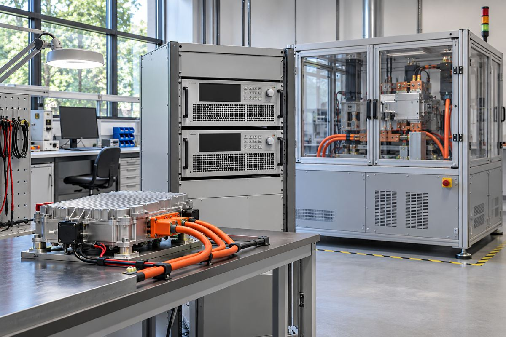

전자기기 / EXPLAINED
키사이트, 고전력 시험 장비 범위 확대…1500V와 12kW는 모델별 조건
전원을 공급하는 장비와 전력을 흡수하는 부하를 구분해야 배터리 시험 사양을 읽을 수 있다.

키사이트가 11월 10일 자동화 고전력 시험 장비 제품군을 확대한다고 발표했다. 재생형 전원공급기와 전자 부하에 전압 선택지를 더하고, 최대 12kW를 제공하는 새 DC 전원공급기 계열을 소개했다. 범위는 낮은 전압에서 큰 전류를 다루는 시험부터 최대 1500V급 응용까지 걸친다. 다만 이 숫자들은 제품군에 걸친 선택지이며 한 모델이 모든 최대값을 동시에 낸다는 뜻은 아니다.
키사이트는 통신·전자·전력 시스템을 설계하고 시험하는 장비와 소프트웨어를 공급하는 기업이다. 여기서 DC는 직류로, 배터리나 전력 변환기의 입출력을 다룰 때 사용한다. 전원공급기는 시험 대상에 전력을 넣고, 전자 부하는 대상이 내보내는 전력을 받아 정해진 소비 상태를 만든다. 충전기와 배터리를 시험할 때 두 기능을 구분해야 어떤 방향의 전력을 검증하는지 알 수 있다.
새 선택지에는 10V에서 최대 1020A의 공급 전류를 다루는 장비가 포함된다. 낮은 전압이라고 작은 전력을 뜻하지는 않는다. 전력은 전압과 전류를 함께 봐야 하며, 높은 전류에서는 배선과 접속부의 저항과 발열도 중요해진다. 회사는 32V·300V·1500V 옵션도 소개하면서 24V·28V 시스템, 270V DC 항공 장비와 고전압 배터리·변환기 등을 용도로 들었다. 이 수치는 대상 장비의 공칭 전압과 시험 장비 선택지를 섞지 않고 읽어야 한다.
랙 안에서 차지하는 높이도 이번 발표의 한 축이다. 회사는 재생형 전원 및 전자 부하가 1U에 최대 6kW, 2U에 최대 12kW를 제공한다고 설명한다. U는 장비 랙 높이 단위로, 전력이나 채널 수의 단위가 아니다. 같은 공간에서 채널을 늘리려는 시험실에는 의미가 있지만, 설치 가능한 총전력은 전기 공급과 냉각, 안전 조건도 함께 검토해야 한다. 숫자만 보고 기존 랙에 곧바로 넣어도 된다고 판단할 수 없다.
전력을 되돌리는 시험
재생형 장비는 시험 중 흡수한 에너지 일부를 전원망으로 돌려보내는 방식이다. 모두 열로 처리하는 방식과 다른 선택지가 될 수 있다. 그러나 실제 절감량은 시험 패턴과 전환 효율, 가동 시간에 달려 있다. 이번 자료에는 특정 시험실의 전기요금 절감률이 제시되지 않아 임의의 비용 절감 수치를 붙이지 않았다. 에너지 회수 기능과 장비의 무손실 동작은 같은 뜻이 아니다.
회사는 PathWave 전력 제어·분석과 배터리 시험 소프트웨어로 시험 구성과 결과 분석에 드는 맞춤 프로그래밍을 줄인다고 설명한다. 자동화는 같은 조건의 반복 시험에 도움이 될 수 있지만 시험 절차와 판정 기준이 적절한지는 사용자가 정해야 한다. 편집부의 해석으로는 이번 변화는 소비자에게 보이는 새 배터리보다, 그 배터리와 전력 장치를 평가하는 개발 기반을 넓히는 소식이다. 측정 장비의 최대 정격이 시험 대상 제품의 성능 향상을 직접 입증하지는 않는다.
발표일은 11월 10일이지만 모든 옵션의 지역별 출하 날짜와 가격은 자료에 일괄 제시되지 않았다. 이전에 발표한 7.5kW 장비를 병렬 연결해 최대 90kW로 구성하는 설명도 포함돼 있으나, 새 12kW 한 대의 정격과는 별개다. 구매자는 필요한 전압·전류 영역, 채널 수와 제어 소프트웨어의 조건을 정한 뒤 개별 모델 견적을 확인해야 한다.